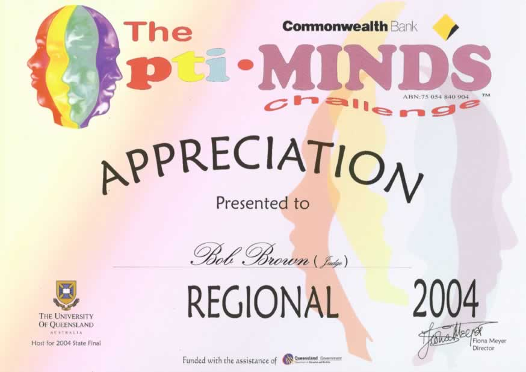
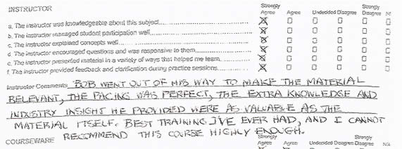
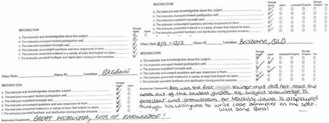
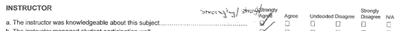

|
Based in beautiful Brisbane (Queensland, Australia), Transentia specialises
in identifying and applying leading-edge technologies to customer's problems,
along with the development and presentation of training materials introducing
these technologies to the I.T. industry.
"The presenter had an impressive knowledge of the history and relevance of various technologies..."
Transentia offers mentoring, development and consulting services in a number of enterprise-level technologies, including:
- Java 2, Enterprise Edition (J2EE) technologies [JavaServer Pages (JSP),
Tag Libraries, Servlets, Enterprise Java Beans (EJBs), Java Messaging
Service (JMS), ...]; BEA WebLogic Platform technologies [Server, Portal,
Workshop, ...]
- Portal/portlet technologies
- Open Source tools [JBoss, Apache, Struts, Eclipse, Netbeans, Ant,
JUnit, ...]
- Java 2, Standard Edition (J2SE) technologies [Applications and Applets,
Swing GUI, RMI, Java Web Start, ...]
- WebServices on the J2EE and .Net platforms
- Static and Database-driven Web site design and implementation
- Linux implementations
"Your report was exactly what we needed. It was factual and offered realistic
options/recommendations. Hope to work with you again in the future."
To find out more about us, please select from the links displayed along
the top of the page."
|
|
Please note our new address:
73 Frasers Rd.
Ashgrove
Brisbane 4060
Queensland
Australia
|
| |
|
Bob presented at the 2004 AUSOUG conferences in Brisbane
and Sydney. His paper, on the upcoming XQuery specification
is now available.
|
| |
| |
|
Bob was a judge at the recent Opti-Minds
challenge: "Extracting Zargoogillybobs."

|
| |
| |
|
This will have to stop...Bob is already unbearable...this will feed
his ego even more:

|
| |
| |
|
Some more goodness...more feedback from another of Bob's recent courses (names have been blurred to protect the innocent (:-)):

Thank you all! |
|
| |
|
A bit of praise never hurts... A nice piece of feedback from one of Bob's recent courses:

Thank you! Everyone's ego needs a boost occassionally! |
| |
| |
|
Bob Brown presented the paper
Examining the Open Source Equation
at the Australian Oracle User's Group 2003
conference, "Oracle with 20:20 Foresight"
in Brisbane on 20 August 2003, and in Sydney on 26 August 2003. |
| |
| |
|
Bob Brown presented the paper
J2EE-Based Systems Development and Oracle9i JDeveloper
at the New Zealand Oracle User's Group 2003
conference in Hamilton on 27 March 2003.
This paper was voted
third best of the conference . "Thank-you", everyone who attended
it!
|
An all-in-one, "printer-friendly" overview of many of these pages is
available.
"Thank-you Bob. I found your sessions extremely informative and enjoyable."
| |